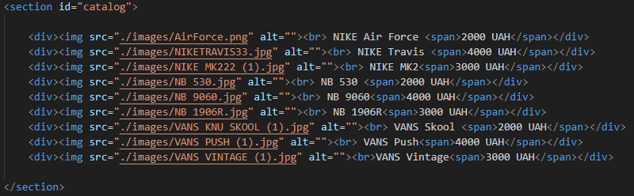
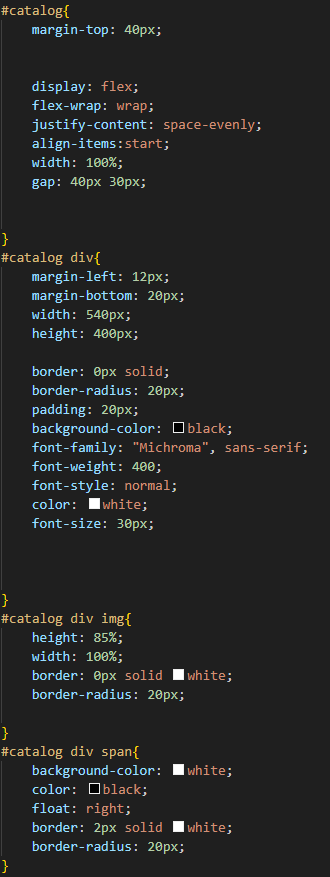
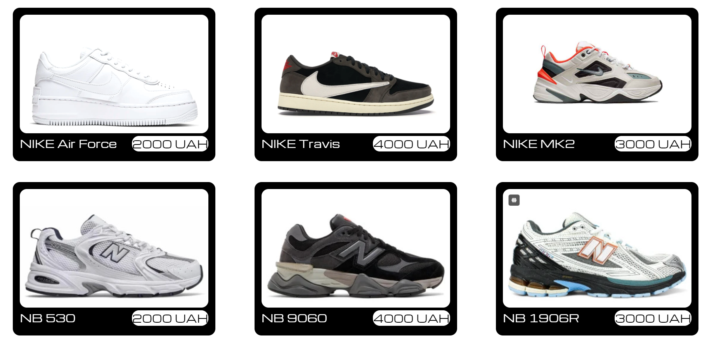
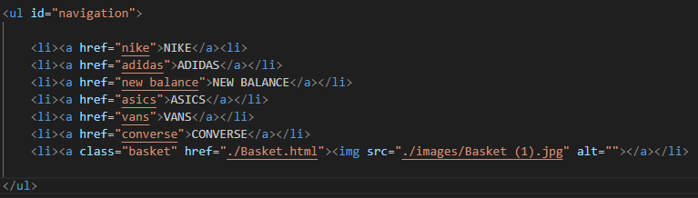
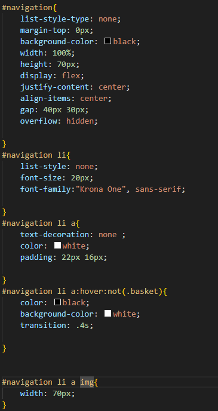
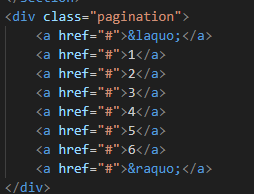
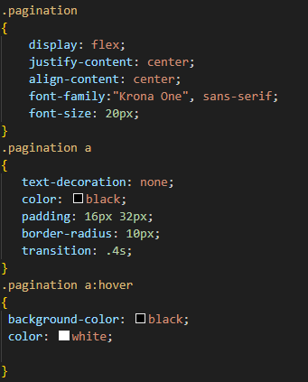
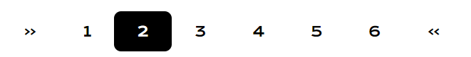

| Лабораторна Робота №1 |
Лабораторна Робота №2 |
Лабораторна Робота №3 |
Лабораторна Робота №4 |
Лабораторна Робота №5 |
Лабораторна Робота №6 |
Лабораторна Робота №7 |
Лабораторна Робота №8 |
Лабораторна Робота №9 |
| Тема,Мета ЛР2 Місце розсташування сайту,звіту |
Цей елемент Section використовує стилізацію шрифтів, контурів, фону та кольору тексту    Цей Список стилізований під навігаційну панель та додано анімації   Додано пагінацію та анімації для неї    |
| Способи підключення стилів | |
| Селектори | |
| Селектори тегу | |
| Селектори класу | |
| Селектори ідентифікаторів |
|
| Інші селектори | |
| СSS Шрифти Текст Таблиці Фон Контур Списки CSS Просунутий |
|
| ВИСНОВКИ |